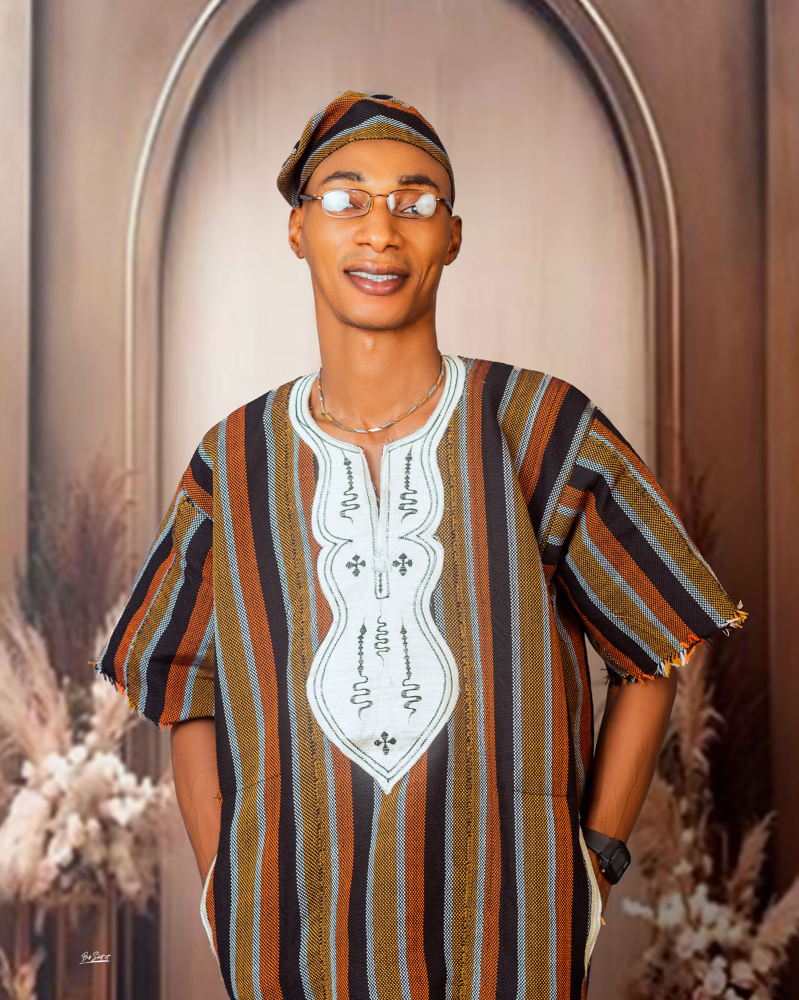

Gerald Williams | WDD 130
Hello! my name is Gerald Williams, I am married for two years now with a loving son. I am really blessed to have such a wonderful wife and a son, they always added to my joy as a father and a husban.
Hello! my name is Gerald Williams, I am married for two years now with a loving son. I am really blessed to have such a wonderful wife and a son, they always added to my joy as a father and a husban.